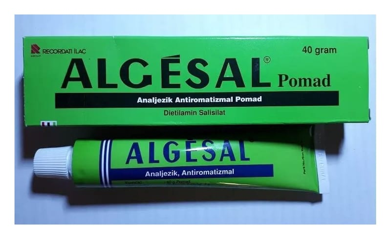

Algesal %10 Merhem, 40 g

Ne için kullanılır
KT · Bölüm 1• ALGESAL, etkin madde olarak bir salisilik asit olan dietilamin salisilat içeren, beyaz veya fildişi renkli, hafif lavanta kokulu merhemdir. • ALGESAL, 40 gr’lık alüminyum tüpte hasta kullanma talimatını da içeren karton kutuda kullanıma sunulmaktadır. • ALGESAL, lumbago (bel ağrısı), fibrozit (kulunç), siyatik (sinirin sıkışmasına bağlı oluşan ağrı) , morluklar ve incinmeler dahil olmak üzere romatizmal ve minör kas iskelet ağrılarının giderilmesinde kullanılan bir lokal ağrı kesicidir.